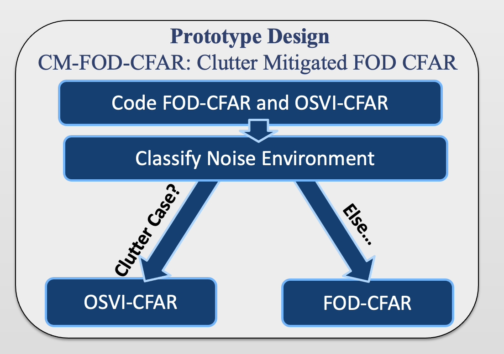
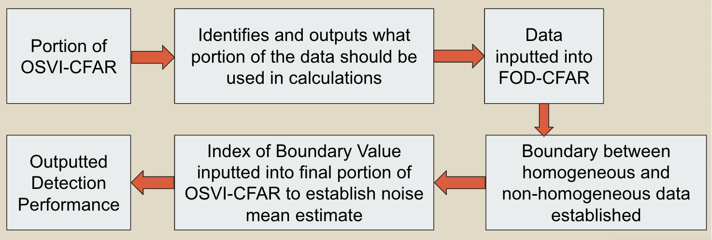
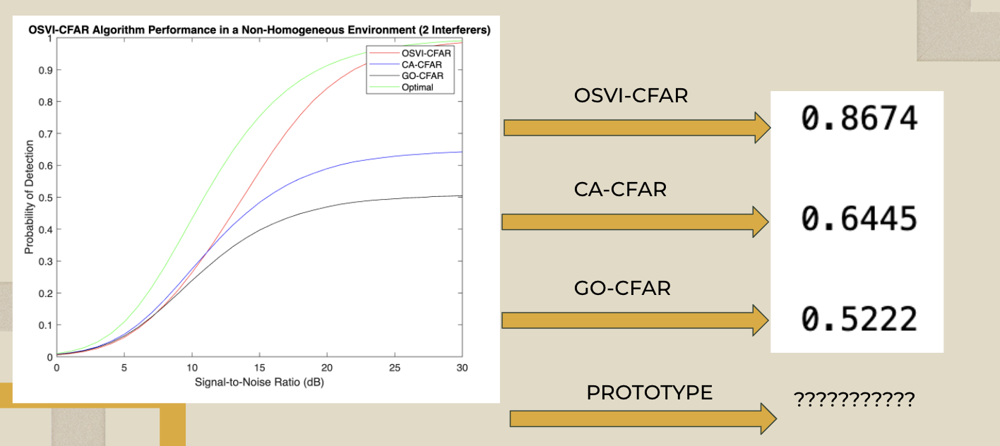
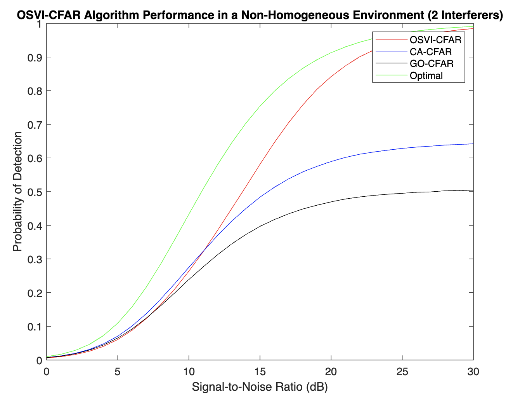
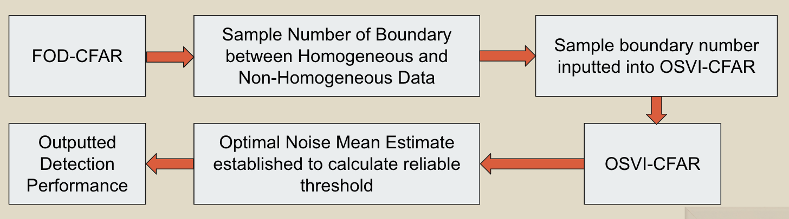
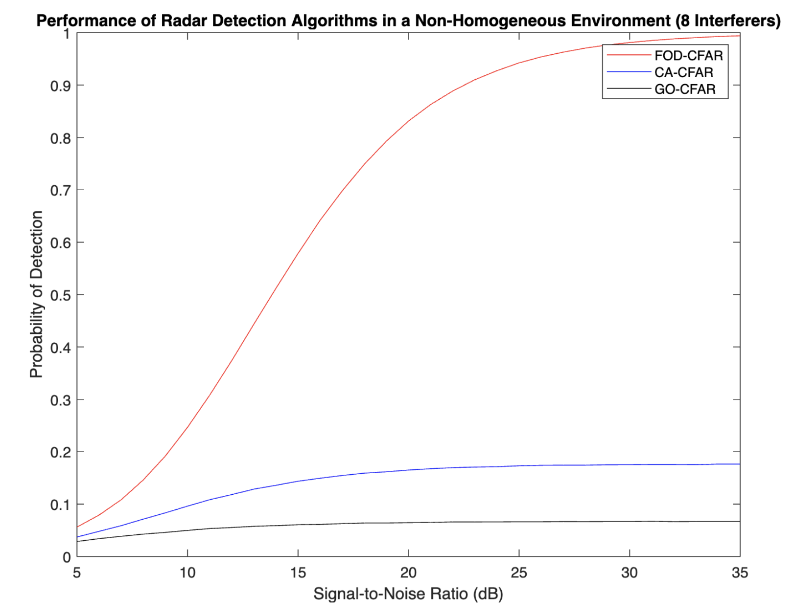
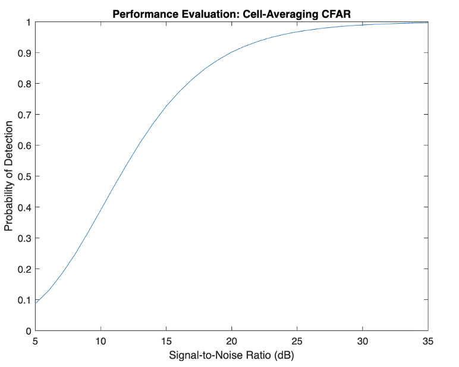
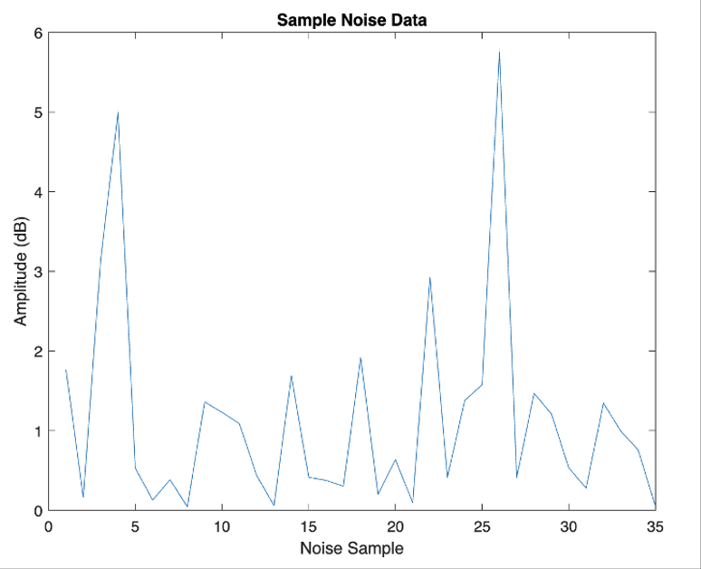
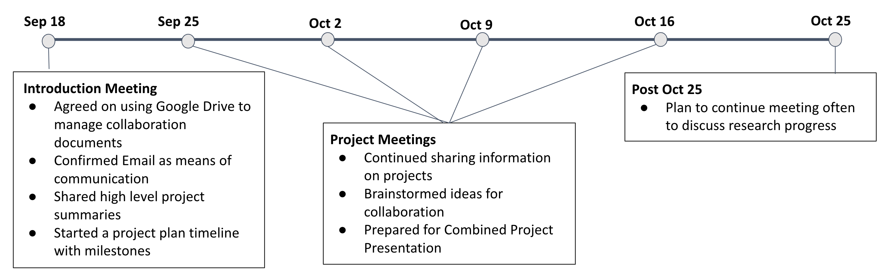

Progress Updates
Progress Update #17 (October 1st, 2022): Senior Research Project
I began background research for my Senior Research Project focusing on clustering algorithms. I looked into previous research on using machine learning clustering algorithms in radar detection, as well as common clustering algorithms already used in the radar field. This background research helped me establish an overall structure and outline for my project.
Next Steps
Progress Update #16 (July 1st, 2022): Global Research Collaboration Presentation
My South Korean research partners and I presented the findings of our global collaboration on the applications of genetic algorithms in non-biological systems to the teachers of the Academy of Science and Daegu Science High School.
Global Research Collaboration
Progress Update #15 (June 1st, 2022): Research Symposium
I presented the findings of my project at the Academy of Science Research Symposium (See "Additional Resources" in "Project Summary" for research poster). I also began writing a research paper on my project.
Project Summary (See "Additional Resources")
Progress Update #14 (May 1st, 2022): Completed Prototype Implementation and Performance Evaluation
I completed the implementation of my radar detection prototype and evaluated its performance in numerous interferer environments compared to the FOD-CFAR, OSVI-CFAR, CA-CFAR, and GO-CFAR. I also evaluated the prototype's performance in a clutter edge environment (See Results). In addition to the outputted plots, I used my area-based evaluation method to output the performance of each algorithm in each case on a 0 to 1 scale.
Results
Progress Update #13 (April 1st, 2022): Prototype Modification and Implementation
I made a final modification to the outline for my Radar Detection Prototype, now named the Clutter Mitigated First Order Difference CFAR, or CM-FOD-CFAR. The FOD-CFAR was weakest in a clutter environment, or one where interference dominates the collected noise data. So, in the prototype, the OSVI-CFAR would be applied in the case of a clutter environment, otherwise the FOD-CFAR would be applied. I began the implementation of the prototype.
Progress Update #12 (March 1st, 2022): Revised Outline of Prototype and Initial Implementation
After beginning the implementation of my prototype, I realized a few flaws in my prototype outline. The main flaw was that while the FOD-CFAR established a boundary based on all of the data given, there are some cases in the OSVI-CFAR where only half the noise data is used to establish the noise mean estimate, thus there could be situations where the boundary established by the FOD-CFAR could be at an index larger than the size of data used in the OSVI-CFAR. So, I revised my prototype outline as shown below. First, the OSVI-CFAR will determine the enivironment, or distribution, of the noise data and identify what portion of the data should be used in the noise mean estimate calculations. This portion of the data will be inputted into the FOD-CFAR, where the boundary between homogeneous and non-homogeneous data for that specific data will be established. This boundary will then be used in the OSVI-CFAR as the kth ordered index value to establish the noise mean estimate and thus a threshold that can be used to evaluate detection performance. I finally began the initial implementation of this revised prototype.
Progress Update #11 (February 14st, 2022): Developing a Area-based Method of Performance Evaluation
I developed a new method of evaluation that quantifies the performance of an algorithm with a value from 0 to 1. First, the optimal curve in green is essentially the best case scenario for an algorithm’s performance, so the goal is for an algorithm to get as close to the optimal as possible. So, for my evaluation method, I used area under the curve calculations to output what portion of the graph of the optimal curve is also covered by the curve of a given algorithm. I’m using area to quantify how close a certain algorithm is to the optimal curve. So, from this, we obtained three values for the respective algorithms shown below. Overall, with this new method of evaluation, it is easier to understand and compare algorithm performances. Once I develop my prototype, I can use this area-based performance evaluation to easily compare my prototype’s performance to that of other algorithms.
Progress Update #10 (February 1st, 2022): Finalizing OSVI-CFAR and Beginning Prototype Implementation
I was able to implement and replicate the results for the OSVI-CFAR and start implementing my radar detection prototype which combines the two. Shown below is a performance evaluation graph of the OSVI-CFAR compared to the CA-CFAR and the GO-CFAR in an environment with 2 interferers. The prototype is going to be a sequential implementation of the FOD and OSVI CFARS. Running a portion of the FOD-CFAR will identify what noise data sample marks the boundary between homogeneous and non-homogeneous data. Then, the index, or location, of this boundary will be inputted into the OSVI-CFAR as the kth ordered index value. This k value essentially identifies the index of the noise sample that will be used as the noise mean estimate. For instance, if a certain set of data with 36 samples is inputted into the algorithm, and the FOD-CFAR identifies the boundary between the homogeneous and non-homogeneous data at the 20th sample, this index of 20 will be inputted into the OSVI-CFAR as the k value, where the value of this 20th noise sample will be used to establish a reliable noise mean estimate and thus threshold that isn’t corrupted by any interference, allowing for a high detection performance. Essentially, the boundary established by the FOD-CFAR helps to select a k value that isn’t interference, allowing for a dependable noise mean estimate and threshold to be established. A flowchart outlining the prototype is shown below the graph.
 Progress Update #9 (January 1st, 2022): Finalizing FOD-CFAR and Semester Presentation
I made the final edits to the FOD-CFAR, primarily for efficiency purposes, and started to further develop the OSVI-CFAR. I also presented my research project to a general audience at the Academy of Science, specifically to some teachers and a few of my peers. I summarized background, the project itself, current progress, and goals looking forward. Links to the video presentation and the corresponding slides can be found below. I also continued working with my research partners in Korea on our collaboration project. Lastly, I reached out to scientist Wen Jiang to get additional insight for my project. Details are in the Conferences menu item of the website.
Semester Presentation VideoSemester Presentation Slidedeck
Progress Update #8 (December 1st, 2021): Further Development of the FOD-CFAR
Primarily focusing on the FOD-CFAR this month, I developed the tools I needed to replicate the results seen in the research paper describing this algorithm. Specifically, I learned how to generate noise data that contains interferers, which are spikes of loud noise that can throw off detections, as the FOD-CFAR was designed to perform in interferer environments. I then used this knowledge to learn how to generate clutter edge environments, which is just noise data that contains a wall of consecutive interferers that can also throw off detection. By creating functions to generate these environments, I was able to replicate the results of the research paper describing the FOD-CFAR. Shown below is an example of this replication of results.
Progress Update #7 (November 1st, 2021): FOD-CFAR and OSVI-CFAR Initial Development
While continuing to develop other algorithms for eventual performance comparison, I started to research in much more detail my project's primary algorithms: the FOD-CFAR and the OSVI-CFAR. After researching, I started taking initial steps towards developing these algorithms by starting with threshold computations, as well as outlining the inner workings of the algorithms conceptually with pseudocode. Shown below is a performance evaluation of the CA-CFAR, one of the algorithms I developed for performance comparison against my prototype.
Progress Update #6 (October 1st, 2021): Data Generation and Developing Algorithms for Performance Comparison
Using the knowledge I gained from the previous month, I created functions for generating my signal and noise data. I also started to develop the different CFAR algorithms that I researched in MatLab, specifically the CA-CFAR, GO-CFAR, SO-CFAR, and CMLD-CFAR. Since the papers only described the algorithms conceptually, I had to use the threshold formulas provided to develop the algorithms from scratch. Then, I would attempt to replicate the results of the paper for confirmation that I programmed the algorithm correctly. The development of these algorithms lasted for the rest of October. Shown below is a sample of one trial of generated noise data.
Progress Update #5 (September 7th, 2021): Global Research Collaboration Program
My research project was selected for participation in the AOS Global Research Collaboration Program with the South Korean students of Daegu Science High School. We introduced our projects to each other and collaborated to develop a combined research proposal that we presented to the Academy of Science and Daegu Science High School faculty on October 25, 2021. Now, we plan to continue moving forward with our collaboration by meeting every two to three weeks on zoom to share progress status and updates.
Progress Update #4 (September 1st, 2021): Project Background
In order to gain more background for my project, I continued to research different CFAR algorithms I could develop for performance comparison against my prototype. For instance, I started with the CA-CFAR in the research paper "A Study Of CFAR Implementation Cost And Performance Tradeoffs In Heterogeneous Environments" and moved on to the GO-CFAR and SO-CFAR using the paper "Performance Analysis of Various Constant False Alarm Receivers in non-homogeneous background for Multi-Mission Radar". This background research lasted for the rest of September.
Progress Update #3 (August 26th, 2021): Project Presentations
At the beginning of my junior year, I was able to present my radar research project to my peers and answer any questions they had, which helped me identify potential areas of improvement in my project to fix and improve my presentation skills. I also began researching basic CFAR algorithms in MatLab that I would eventually use for performance comparison against my prototype. These algorithms include the CA-CFAR, GO-CFAR, SO-CFAR and more. I also developed methods to generate the signal and noise data that I would use to evaluate the performance of these algorithms. These presentations continued for the first quarter of the school year, specifically until November 3rd, 2021.
Progress Update #2 (May 8th, 2021): Summer Coursework
Over the summer, I continued to develop my background in the areas of machine learning and CFAR. I finished the final section of the Mathematics in Machine Learning Course and also began the Udemy Machine Learning A-Z course to learn more specifically about the entire machine learning process, including data preprocessing and different algorithms that can be used to train a model on data. Finally, I started learning the basics of MatLab, which I would eventually use to code my CFAR algorithms, by working through the built-in tutorials on MatLab Online. This coursework lasted the entire summer and ended once the 2021-2022 school year began. To see more details about my summer work, please see the link Coursework.
Progress Update #1 (January 27th, 2021): Initial Development of Project
At the start of this year, I began the early stages of creating my project, which included meeting with expert scientists in the field, writing a background paper, creating proposal videos, and working on machine learning courses to gain a better background in the radar field. Specifically, I enrolled in the online Beaverworks Institute course at MIT, which focused on data science concepts and introduced machine learning. I also began the Coursera Mathematics in Machine Learning course. This work culminated in signatures of approval from research mentors, which allowed me to move forward with my project. This phase of the project continued until the start of summer. To see the recordings of my scientist interviews, please visit this link Conferences.